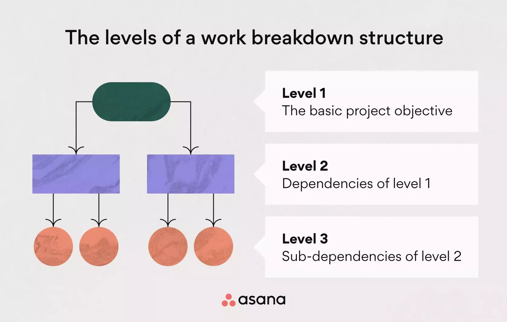

What is project scope management?
Simply put, project scope management is a way of creating outlines that will help create the project's final product. These outlines will make sure to keep the project within the limits that project managers set. Project managers are the ones that are responsible for guiding their teams through each project cycle and in Agile methodology, there are bound to be many life cycles for a singular project. These limitations that are set will help the project achieve its goals, deadlines, and deliverables that were requested. When you create this project scope while thinking about the Agile methodology, you have to be in strong communication with the stakeholders and the customers, and the rest of the project management team. When forming this strong relationship with multiple groups, you will need to structure that project around what the team is going to and not going to do and give them precise objectives to work on. Scope management has six processes, planning scope management, collecting requirements, defining scope, creating the Work Breakdown Structure, validating scope, and finally controlling scope.
Step 1: Creating the scope management plan
The first step in creating a scope management plan is to create a scope plan document. The scope plan document has three main components. The first component is the scope statement, which is used to specify the expected final results and products of the project. The second and third components of the scope plan document are the breakdown of project requirements and any other deliverables that were planned. When creating the scope plan document, you can also include a change control process. The change control process is something that is used to change requests so that you can avoid future scope creeps. Scope creeps are when the asks from stakeholders or customers to CEOs start to outweigh the scope of the project which in return would increase the chances of the project failing.
Step 2: Collect the project requirements
When using agile methodology, involving all the stakeholders as well as customers and other team members is very important. In this step, you collect all the project requirements and make sure you know everything that the stakeholders need and want so that the project can meet its requirements. The goal of this step is to just gather as much information and requirements as possible from the stakeholders that are a part of the project scope.
Step 3: Defining the scope
When using agile methodology, after involving all the stakeholders which are very important, refining that information and requirements and sharing it with the rest of the team is the next important step. When refining these requirements, you can take that information and create a strong and effective scope and product description, for the team members to follow.

Step 4: Creating a Work Breakdown Structure (WBS)
When using agile methodology, the Work Breakdown Structure helps divide the project into different levels of tasks to make sure the objective gets done and all of the team members are able to complete what they’re needed to do. There are usually three levels/components for a Work Breakdown Structure. Level 1 would be the basic project objectives and levels 2 and 3 are all dependencies or sub-dependencies of the level above them with level 1 being the highest level. This is a hierarchical structure of tasks that helps you to monitor and control where your project is going all at the same time as keeping all the team members involved.
Step 5: Validating the scope
In agile methodology, this is a very important step when it comes to creating a project scope management plan. In agile you are encouraged to keep the stakeholders in the loop of the project and this step does exactly that. Validating the scope makes it so that you can show the stakeholders what the objectives and other deliverables are for the project and have them basically sign off on it. This way the stakeholders will be able to look at the plan and see if what they are expecting is the plan to be finished by the deadline they are expecting. The stakeholders will understand the project better and this will also majorly decrease future scope creep. Since the stakeholders are the main ones that are asking for things to be added to the project, with this agile approach you can make sure that those asks don’t happen later in the future when it starts to affect the scope of the project but rather those asks being a part of the project from the planning phase. Another important thing that comes along with validating the scope would be that the project team can get good feedback from the stakeholders, they can show and point out things that need improvement or need to be added to make the project more effective.
Step 6: Controlling the scope
In agile methodology, it is very effective to make sure you can change and adapt to different situations that come up. In the last step of creating a project scope management plan, you are to monitor the status of the project and see if there are any changes that need to be made or are going to be made because of the status of the project. There are many ways to go about this, you can use project management software and with that, you will be given many tools that can help you share the project with stakeholders and other customers to try to get back feedback. You can also use these tools to make sure that you can see all the changes in real-time where you will be given status updates on what changes and what gets improved.
Conclusion:
In conclusion, planning scope management is very important to any project manager. An example that comes to mind is if you wanted to go out and get some new house appliances, and you go and get those items and come back home just to realize that you forgot to buy some of the appliances that you really needed but instead but ones that you already had. This happened because of poor planning and you have now just spent unnecessary money on things that you didn’t even mean to. This same analogy applies to scope management when it comes to project managers. A good and precise project scope can help project managers not have to deal with problems like requirements being constantly changing, wasting time on unnecessary features in the project and not being able to meet the deadlines because of it, and wasting money on things that you didn’t expect to in the first place.
Resources
- https://asana.com/resources/expert-judgment
- https://www.slideteam.net/six-steps-involved-in-project-scope-management.html
- https://www.proofhub.com/articles/project-scope-management#:~:text=Processes%20of%20project%20scope%20management,-According%20to%20the&text=Collecting%20requirements,Validating%20scope